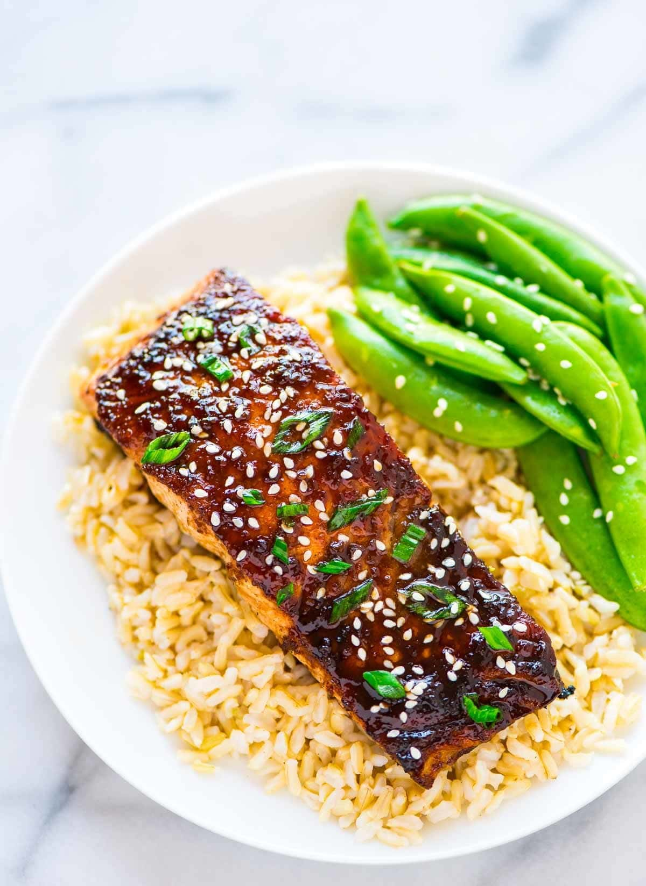

Soy Ginger Salmon
Home

Description
Baked soy ginger salmon is a flavorful and healthy dish that combines the richness of tender, oven-roasted salmon with the bold, aromatic notes of soy sauce, fresh ginger, garlic, and a touch of sweetness—often from honey or brown sugar. As the fish bakes, it absorbs the savory marinade, creating a perfectly glazed exterior while remaining moist and flaky inside. Served with steamed rice, vegetables, or noodles, it’s a vibrant, umami-packed meal that’s both simple and satisfying.
Ingredients
- 3 tablespoons low-sodium soy sauce
- 1 tablespoon rice vinegar
- 2 cloves garlic (minced)
- 2 teaspoons grated fresh ginger
- 1 teaspoon honey
- ½ teaspoon garlic-chili paste
- 1 pound skin-on salmon fillet (cut into 3-4 portions)
- 2 teaspoons canola oil
- Chopped green onions for serving
- Toasted sesame seeds for serving
Steps
- Place a rack in the center of your oven and preheat to 425 degrees F. Heat the skillet so that a drop of water sizzles and evaporates quickly but does not bounce (if it instantly bounces and dances around the pan, your pan is too hot).
- In a small saucepan, stir together the soy sauce, rice vinegar, garlic, and ginger. Bring to a simmer over medium high, then remove from heat and stir in the honey and chili paste. Remove a few spoonfuls of the cooked glaze in a separate bowl for serving.
- Drizzle the salmon with the canola oil and brush so that it is evenly coated. Place the salmon skin-side up on the hot skillet. Let cook for about 3 minutes, totally undisturbed, until the salmon forms a nice crust. When the salmon turns opaque on the sides and starts to turn opaque on top, use a flexible spatula to flip the salmon so that it is skin-side down. Brush or spoon the remaining glaze in the saucepan all over the top. Place the skillet immediately into the oven and let cook for 6 minutes (the salmon will appear a little undercooked in the center but will finish cooking as it rests). Remove from the oven and cover with foil. Let rest 4 to 5 minutes. Serve immediately, topped with reserved glaze, chopped green onion, and sesame seeds.
Note: You can also use salmon portions (smaller fillets), but be aware that they will bake more quickly. If you use sockeye salmon, please be aware that the fillets are thinner than Atlantic or farm-raised salmon, so it will both sear more quickly and bake more quickly.